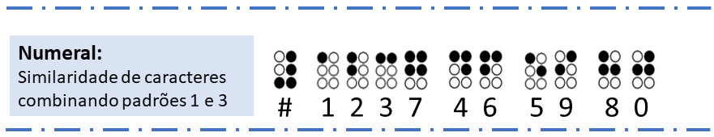

Padrões Braille
Iniciando a partir desta compreensão e objetivando auxiliar professores videntes no aprendizado da linguagem Braille,
de forma mais rápida e de uma perspectiva mais fácil, visto que a leitura é feita de forma visual, esta plataforma traz uma proposta de aprendizagem baseada em padrões
de similaridade dos caracteres Braille.
Organizando as combinações de letras com base na semelhança visual dos caracteres Braille, foi concebido três tipos de padrões.
-
No 1º padrão as letras estão agrupadas devido à sua semelhança de espelhamento no eixo y, que são: D F, E I, H J, R W, e Y Ç.
-
O 2º padrão acompanha as letras M U, N Z e P V, porém, desta vez a similaridade está refletida no eixo x.
-
O 3º padrão, têm sua similaridade através da complementaridade e está organizado da seguinte forma, 2 grupos de 4 letras e 1 grupo de 3 letras A B K L, C G X e O S T Q, que seguem um padrão sequencial do preenchimento da célula Braille onde
cada caractere complementa e ajuda a lembrar do próximo.
-
O Numeral segue a mesma l√≥gica de organiza√ß√£o do padrão 1, com os n√∫meros organizados por possu√≠rem similaridade de espelhamento no eixo ùë¶,
tendo os números 1, 2, 3, 4, 5, 6, 7, 8, 9 e 0. Cada número deve ser associado com o símbolo de numeral em Braille representado abaixo.

Voltar
Próximo